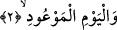
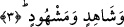

incelir ve hilal şeklini alır. Sonra eğer o ay otuz gün çekiyorsa iki gece gözden kaybolur.
Şâyet yirmidokuz gün çekecekse bu takdirde bir gece gözükmez.
Bu gökteki işâret ettiğimiz yıldızlara buruc denmesi, onların köşklere
benzemelerinden dolayıdır. Ay köşke benzeyen bu yıldızlara inip orada konaklar. Ayrıca
bu yıldızlara buruc denmesinin bir sebebi de araplarda olduğu gibi bazı milletlere daha
fazla gözükmelerinden ve daha çok ön plana çıkmalarından dolayıdır. Çünkü buruc
kelimesinin kökü olan “be-re-ce”, bütün güzellikleriyle birlikte zuhûr etmek, gözükmek
demektir. Nitekim kelimenin kök yapısındaki bu anlamdan dolayı arapçada
“teberreceti’l-mer’etu” tâbiri vardır. Bunun anlamı “kadın teberrüc etti yâni
güzelliklerini ortaya çıkarmada burç gibi oldu” demektir.
Oniki burca gelince bunlar gökyüzünde çıplak gözle görülmezler. Oniki burç bu
yirmisekiz menzile dağıtılmış durumdadır. Güneş bu oniki burcun tamamını bir yılda
dolaşırken ay, her ay dolaşır. Bu burçlara kulların maslahat ve menfaatleri taalluk ettiği
için Allah Teâlâ onların değer ve şereflerini ortaya koymak için üzerlerine yemin
etmektedir.
Okuduğumuz bu âyette ayrıca terakki ve dereceler bakımından makam sâhibi olan
insan ruhuna işâret olunmaktadır.
2. Geleceği bildirilmiş olan güne,
Yani kıyamet gününe. Allah Teâlâ bu günün üzerine yemin ederek kıyamet gününün
değerine ve azametine dikkatleri çekmektedir. Çünkü o gün dâvâların görüleceği
amellere karşılıklarının verileceği gündür ve o gün, hüküm ve otoritenin sâdece Allah’a
âid olduğu gündür.
Bu âyet-i kerimede ruhun tevhid-i zâti keşfinde ulaştığı derecelerin en son derecesi
olan “kıyâmet-i kübra” derecesine işâret vardır.
3. (O günde) tanıklık edene ve edilene andolsun ki,
Yani önceki ve sonrakilerden, insanlardan ve cinlerden, meleklerden ve
peygamberlerden ve acayip varlıklardan o gün gelip orada bulunan herşeyin üstüne
yemin olsun.
Âyette yer alan “şâhid” kelimesi hazır bulunmak anlamına gelen “şühud” kökünden
türemedir. Yoksa dâvâların ve hakların ispat edildiği “şâhid” anlamında değildir. Şahid
kelimesinin nekre olarak getirilmesi vasıfta kapalılık sağlamak içindir. Bu unsurun